- Distance between two points\((x_1, y_1)\), \((x_2, y_2) = \sqrt{(x_2 - x_1)^2 + (y_2 - y_1)^2}\)
- Area of Triangle with vertices \((x_1, y_1)\), \((x_2, y_2)\), \((x_3, y_3)\): \[ \text{Area} = \dfrac{1}{2} \left| x_1(y_2 - y_3) + x_2(y_3 - y_1) + x_3(y_1 - y_2) \right| \]
- Area of triangle formed by the line \(ax + by + c = 0\), x-axis, and y-axis: \[ \text{Area} = \dfrac{1}{2} \left| \dfrac{c^2}{ab} \right| \]
- Let \( AB \) be a line segment. Let \( P \) be a point on it such that \( \dfrac{AP}{PB} = \dfrac{m}{n} \), then we say \( P \) divides \( \overline{AB} \) in the ratio \( m:n \) internally. 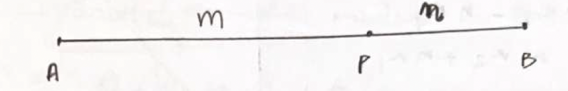
- Let \( P \) be a point on produced \( \overline{AB} \) or \( \overline{BA} \) such that \( \dfrac{AP}{PB} = \dfrac{m}{n} \), then we say \( P \) divides \( \overline{AB} \) in the ratio \( m:n \) externally. 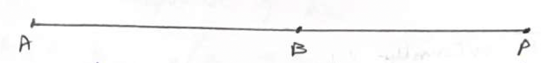
- Let \( A(x_1, y_1) \) and \( B(x_2, y_2) \). Let \( P \) be a point which divides \( \overline{AB} \) in the ratio \( m:n \) internally. Then \( P \left( \dfrac{mx_2 + nx_1}{m+n}, \dfrac{my_2 + ny_1}{m+n} \right) \).
- If \( P \) divides \( \overline{AB} \) externally, then \( P = \left( \dfrac{mx_2 - nx_1}{m-n}, \dfrac{my_2 - ny_1}{m-n} \right) \).
- The ratio at which \( P(x, y) \) divides the line segment joining \( (x_1, y_1) \) and \( (x_2, y_2) \) is \(-\left( \dfrac{x - x_1}{x - x_2} \right)\) or \(-\left( \dfrac{y - y_1}{y - y_2} \right)\).
- The ratio in which the x-axis divides a line segment joining \( (x_1, y_1) \) and \( (x_2, y_2) \) is \(\dfrac{-y_1}{y_2}\).
- The ratio in which the y-axis divides the line segment joining \( (x_1, y_1) \) and \( (x_2, y_2) \) is \(\dfrac{-x_1}{x_2}\).
- If \( P \) is the midpoint of \( A(x_1, y_1) \) and \( B(x_2, y_2) \), then \( P \left( \dfrac{x_1 + x_2}{2}, \dfrac{y_1 + y_2}{2} \right) \).
- If \( P \) is the midpoint of \( A(x_1, y_1) \) and \( B(x_2, y_2) \), then \( P \left( \dfrac{x_1 + x_2}{2}, \dfrac{y_1 + y_2}{2} \right) \)
- The points which divide \( \overline{AB} \) in the ratios \( 1:2 \) or \( 2:1 \) is called point of trisection of \( \overline{AB} \)
- 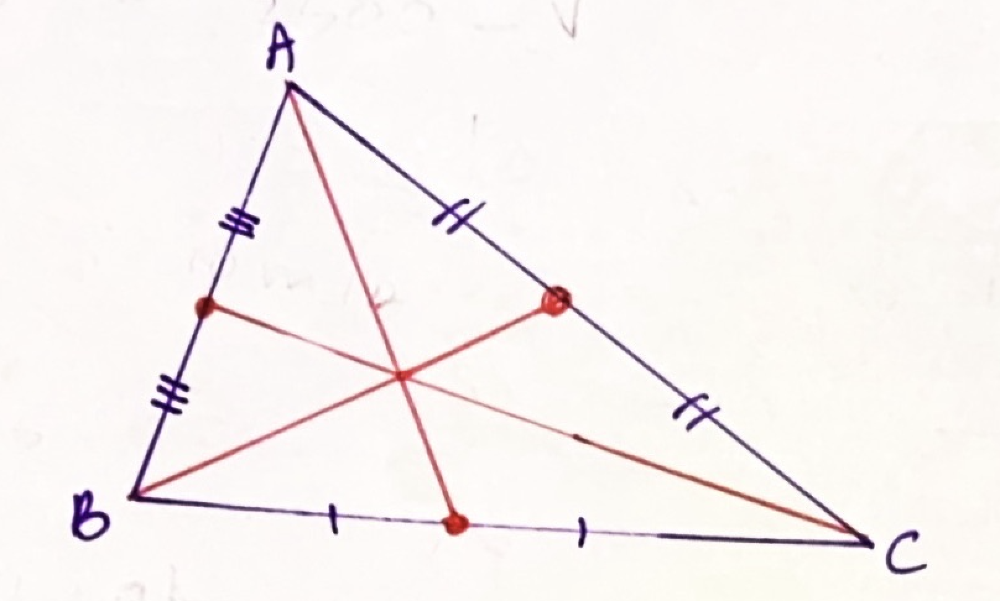 The centroid of a triangle is the point where its three medians intersect. A median of a triangle is a line segment joining a vertex to the midpoint of the opposite side. The centroid always lies inside the triangle.
- It divides each median into a ratio of 2:1, with the longer segment being closer to the vertex.
- Let \( A(x_1, y_1) \), \( B(x_2, y_2) \), and \( C(x_3, y_3) \) be vertices of a triangle, then the centroid \( G \) is \(\left( \dfrac{x_1 + x_2 + x_3}{3}, \dfrac{y_1 + y_2 + y_3}{3} \right)\)
- Let \( A(x_1, y_1) \) and \( B(x_2, y_2) \). Then the ratio at which the line \( ax + by + 1 = 0 \) divides \( \overline{AB} \) is \(- \dfrac{ax_1 + by_1 + c}{ax_2 + by_2 + c} \)
-
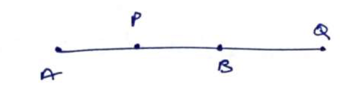
Let \( P \) divide \( \overline{AB} \) in the ratio \( m:n \) internally and \( Q \) divide \( \overline{AB} \) in the ratio \( m:n \) externally. Then \( P \) and \( Q \) are called harmonic conjugates of one another. (If the ratio is +ve, it is getting divided internally; if -ve, externally.)
-
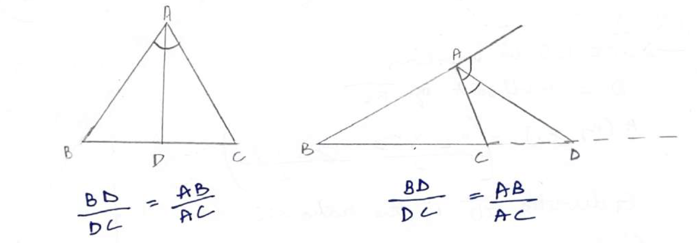
VABT (Vertical Angle Bisector Theorem): In a triangle, the bisectors of vertical angle divide the opposite side into the ratio of the other two sides.
-
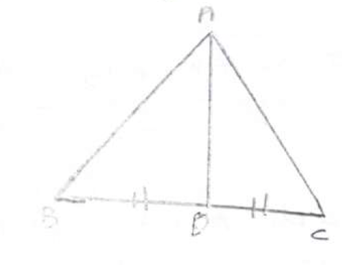
Appolonius Theorem: In a triangle \( \Delta ABC \), let \( AD \) be the median ( \( D \) lies on \( BC \) ). Then \[ AB^2 + AC^2 = 2 \left( AD^2 + BD^2 \right) \]
-
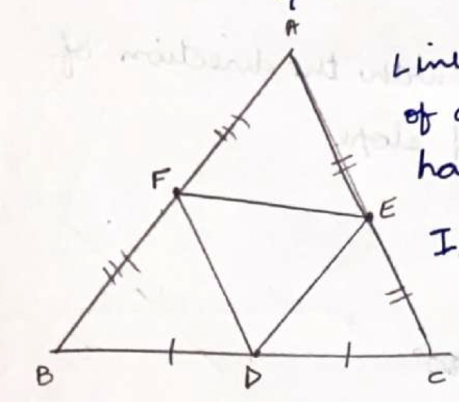
In a triangle \( \Delta ABC \), let \( D \), \( E \), and \( F \) be the midpoints of sides \( BC \), \( AC \), and \( AB \) respectively. Then the area of \( \Delta DEF \) is one-fourth of the area of \( \Delta ABC \): \[ \text{Area} (\Delta DEF) = \dfrac{1}{4} \text{Area} (\Delta ABC) \]
- The line joining the midpoints of any two sides of a triangle is parallel to the third side and half of it.
- In a parallelogram \( PQRS \), the midpoint of \( PR \) is equal to the midpoint of \( QS \).
-
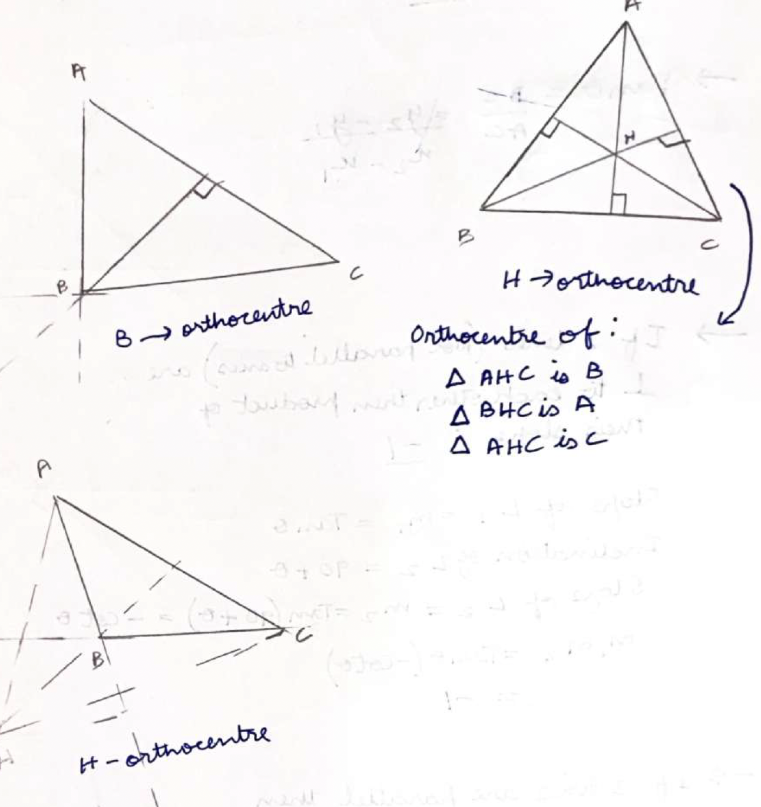
The orthocenter of a triangle is the point where all three of the triangle's altitudes intersect. An altitude of a triangle is a perpendicular segment from a vertex to the line containing the opposite side. The orthocenter can lie inside the triangle, outside the triangle, or at the vertex of a right triangle, depending on the type of triangle:
Acute Triangle: The orthocenter lies inside the triangle.
Right Triangle: The orthocenter is located at the vertex of the right angle.
Obtuse Triangle: The orthocenter is outside the triangle. -
If a line makes an angle of \( \theta \) with the direction of the
x-axis, then \( \tan \theta \) is called the slope. Generally, the
slope is represented by \( m \).
\[ m = \tan \theta \text{, where} 0^\circ \leq \theta \leq 180^\circ \]
\[ \tan \theta = \dfrac{BC}{AC} = \dfrac{y_2 - y_1}{x_2 - x_1} \] -
If two lines (not parallel to each other) are perpendicular to each
other, then the product of their slopes is -1.
Proof: Slope of \( L_1 = m_1 = \tan \theta \)
Inclination of \( L_2 = 90^\circ + \theta \)
Slope of \( L_2 = m_2 = \tan (90^\circ + \theta) = -\cot \theta \)
\( m_1 m_2 = \tan \theta (-\cot \theta) = -1 \) - If two lines are parallel, then their slopes are equal.
-
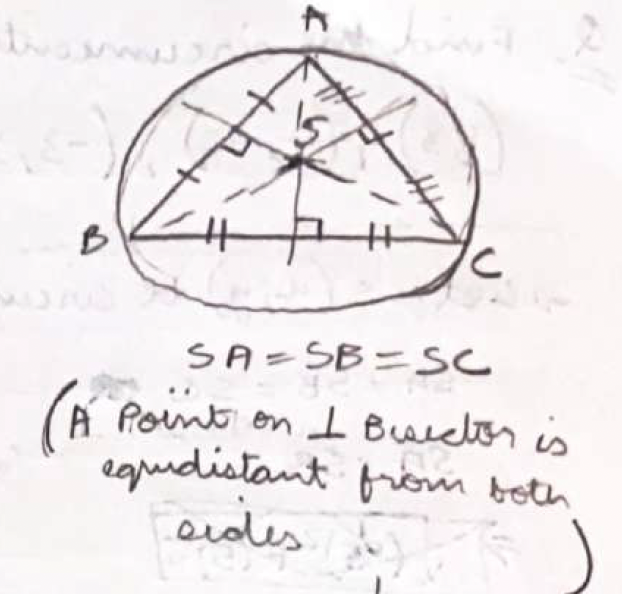
The circumcenter of a triangle is the point where the perpendicular bisectors of the sides of the triangle intersect. It is equidistant from all three vertices of the triangle, meaning it is the center of the circle that can be circumscribed around the triangle. This circle is called the circumcircle, and its radius is known as the circumradius. The circumcenter can lie inside, outside, or on the triangle, depending on whether the triangle is acute, obtuse, or right-angled, respectively. "S" is the circumcenter in the above figure.
-
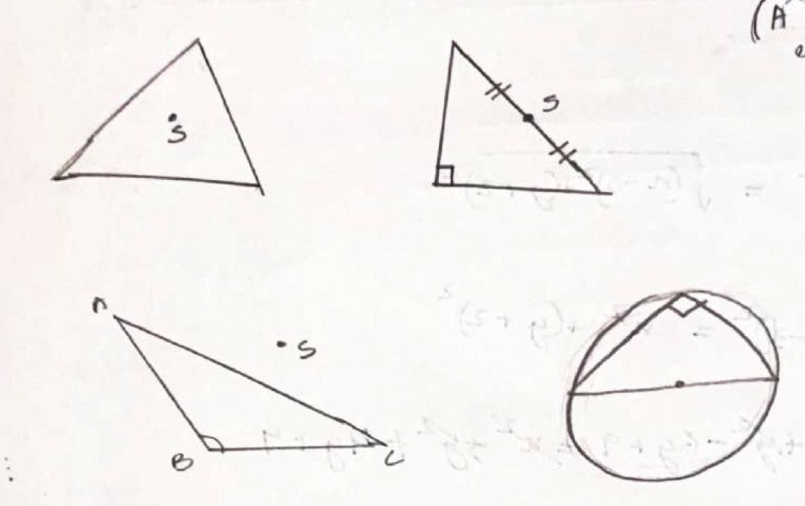
The circumcenter is equidistant from all three vertices.
-
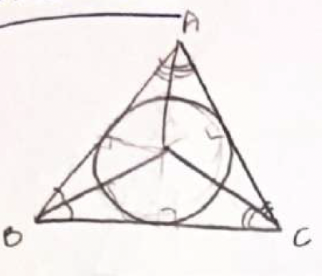
The incenter of a triangle is the point where the angle bisectors of the triangle intersect. It is the center of the circle inscribed within the triangle (incircle), which is tangent to all three sides of the triangle. The incenter is equidistant from all the sides of the triangle.
The coordinates of the incenter of a triangle with vertices \((x_1, y_1)\), \((x_2, y_2)\), and \((x_3, y_3)\) can be found using the formula:
\[ \left( \dfrac{a x_1 + b x_2 + c x_3}{a + b + c}, \dfrac{a y_1 + b y_2 + c y_3}{a + b + c} \right) \]
where \(a\), \(b\), and \(c\) are the lengths of the sides opposite to the vertices \((x_1, y_1)\), \((x_2, y_2)\), and \((x_3, y_3)\) respectively.
-
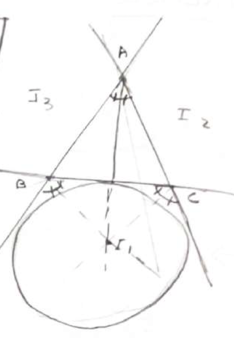
The excenter of a triangle is the point where the internal bisector
of one angle and the external bisectors of the other two angles
intersect. It is the center of the excircle, which is a circle
tangent to one side of the triangle and the extensions of the other
two sides. Each triangle has three excenters, one for each excircle.
Formulas for the excenters:
\( I_1 = \left( \dfrac{-a x_1 + b x_2 + c x_3}{-a + b + c}, \dfrac{-a y_1 + b y_2 + c y_3}{-a + b + c} \right) \)
\( I_2 = \left( \dfrac{a x_1 - b x_2 + c x_3}{a - b + c}, \dfrac{a y_1 - b y_2 + c y_3}{a - b + c} \right) \)
\( I_3 = \left( \dfrac{a x_1 + b x_2 - c x_3}{a + b - c}, \dfrac{a y_1 + b y_2 - c y_3}{a + b - c} \right) \) -
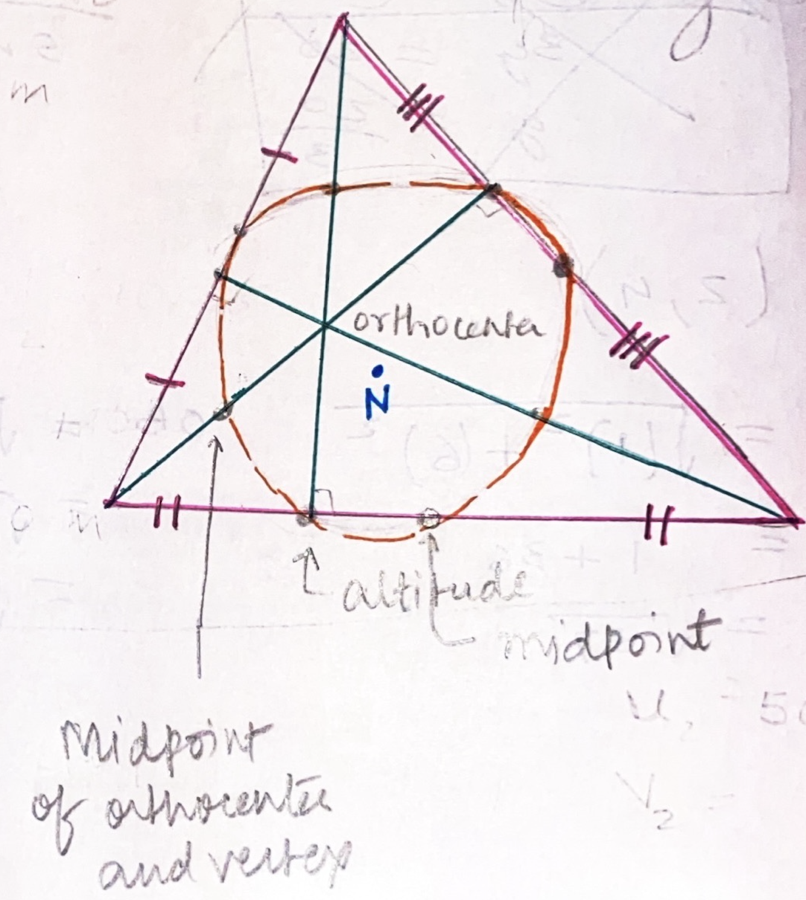
The nine-point circle of a triangle, also known as the Euler circle,
is a circle that passes through nine significant concurrent points
in the triangle. These points include the midpoints of the three
sides, the feet of the three altitudes, and the midpoints of the
segments connecting the orthocenter to the triangle's vertices.
The center of the nine-point circle is the midpoint between the orthocenter and the circumcenter of the triangle. The center of the nine-point circle is called the nine-point center and is denoted by N. The radius of the nine-point circle is 1/2 of the circumradius. - 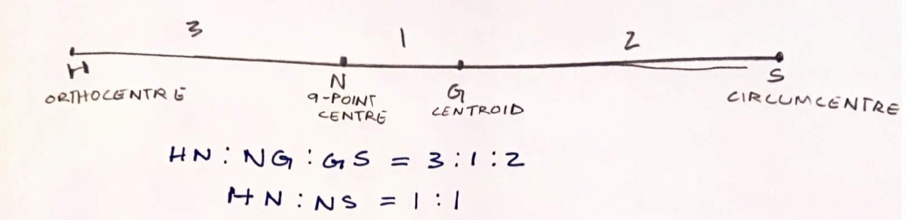 The orthocenter, nine-point center, centroid, and circumcenter are collinear. The line on which these points lie is called the Euler line.
- Every first degree equation in \( x, y \) represents a straight line.
- The trigonometrical tangent of the angle that a non-vertical line makes with the positive direction of the x-axis in anticlockwise sense is called the slope or gradient of the line.
- The slope \( m \) of a non-vertical line passing through the points \( (x_1, y_1) \) and \( (x_2, y_2) \) is given by \[ m = \dfrac{y_2 - y_1}{x_2 - x_1} = \dfrac{\text{Difference of ordinates}}{\text{Difference of abscissae}} \]
- Slope of a horizontal line is zero and slope of a vertical line is undefined.
- An acute angle \( \theta \) between the lines having slopes \( m_1 \) and \( m_2 \) is given by \[ \tan \theta = \left| \dfrac{m_1 - m_2}{1 + m_1 m_2} \right|, 1 + m_1 m_2 \neq 0 \]
- Two lines are parallel if and only if their slopes are equal.
- Two lines are perpendicular if and only if the product of their slopes is \( -1 \).
- Three points \( P, Q \) and \( R \) are collinear if and only if Slope of \( PQ \) = Slope of \( QR \)
- If a straight line cuts the x-axis at \( A \) and the y-axis at \( B \), then \( OA \) and \( OB \) are known as the intercepts of the line on x-axis and y-axis respectively.
- The equation of a line parallel to x-axis at a distance \( a \) from it is \( y = a \) or \( y = -a \) according as it is above or below x-axis.
- The equation of a line parallel to y-axis at a distance \( b \) from it is \( x = b \) or \( x = -b \) according as it is on the right or on left side of y-axis.
- The equation of x-axis is \( y = 0 \).
- The equation of y-axis is \( x = 0 \).
- The equation of a line with slope \( m \) and making an intercept \( c \) on y-axis is \( y = mx + c \).
- The equation of a line with slope \( m \) and passing through the origin is \( y = mx \).
- The equation of the line which passes through the point \( (x_1, y_1) \) and has slope \( m \) is \[ y - y_1 = m (x - x_1) \]
- The equation of the line passing through the points \( (x_1, y_1) \) and \( (x_2, y_2) \) is \[ y - y_1 = \dfrac{y_2 - y_1}{x_2 - x_1} (x - x_1) \]
- The equation of the line making intercepts \( a \) and \( b \) on x and y-axis respectively is \[ \dfrac{x}{a} + \dfrac{y}{b} = 1 \]
- The equation of the straight line upon which the length of the perpendicular from the origin is \( p \) and the angle between this perpendicular and positive x-axis is \( \alpha \) is given by \[ x \cos \alpha + y \sin \alpha = p \]
-
The equation of the straight line passing through \( (x_1, y_1) \) and
making an angle \( \theta \) with the positive direction of x-axis is
\[ \dfrac{x - x_1}{\cos \theta} = \dfrac{y - y_1}{\sin \theta} = r \]
where \( r \) is the distance of the point \( (x, y) \) on the line
from the point \( (x_1, y_1) \)
The coordinates of any point on the line at a distance \( r \) from the point \( (x_1, y_1) \) are \[ (x_1 + r \cos \theta, y_1 \pm r \sin \theta) \] - The slope of the line \( ax + by + c = 0 \) is \[ -\dfrac{a}{b} = \dfrac{\text{Coefficient of } x}{\text{Coefficient of } y} \]
- Three lines \( L_1 = a_1 x + b_1 y + c_1 = 0 \), \( L_2 = a_2 x + b_2 y + c_2 = 0 \) and \( L_3 = a_3 x + b_3 y + c_3 = 0 \) are concurrent, if \[ \begin{vmatrix} a_1 & b_1 & c_1 \\ a_2 & b_2 & c_2 \\ a_3 & b_3 & c_3 \\ \end{vmatrix} = 0 \] Also, these lines are concurrent iff there exist scalars \( \lambda_1, \lambda_2, \lambda_3 \) such that \[ \lambda_1 L_1 + \lambda_2 L_2 + \lambda_3 L_3 = 0 \]
- The equation of a line parallel to the line \( ax + by + c = 0 \) is \( ax + by + \lambda = 0 \), where \( \lambda \) is a constant.
- The equation of a line perpendicular to the line \( ax + by + c = 0 \) is \( bx - ay + \lambda = 0 \), where \( \lambda \) is a constant.
- The perpendicular distance \( d \) of a line \( ax + by + c = 0 \) from a point \( (x_1, y_1) \) is given by \[ d = \dfrac{|ax_1 + by_1 + c|}{\sqrt{a^2 + b^2}} \]
- The distance \( d \) between the parallel lines \( ax + by + c_1 = 0 \) and \( ax + by + c_2 = 0 \) is given by \[ d = \dfrac{|c_1 - c_2|}{\sqrt{a^2 + b^2}} \]
- The equations of the lines passing through \( (x_1, y_1) \) and making an angle \( \alpha \) with the line \( y = mx + c \) are given by \[ y = mx \pm x \tan \alpha \] \[ y - y_1 = \dfrac{m \pm \tan \alpha}{1 \mp m \tan \alpha} (x - x_1) \]